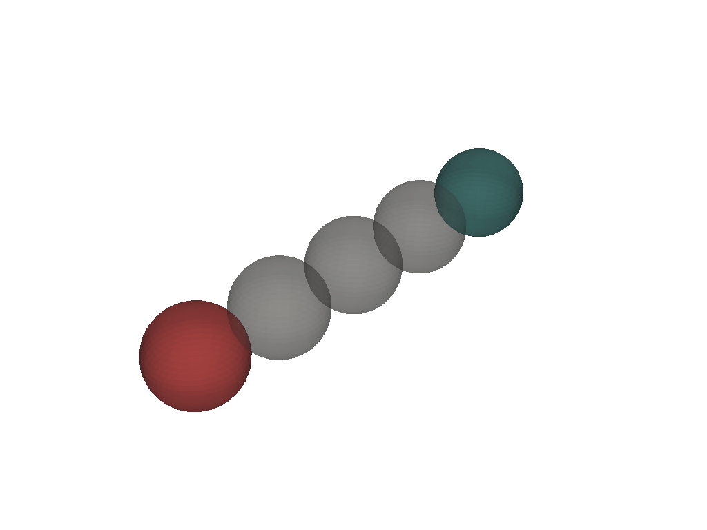

Note
Go to the end to download the full example code
Write a custom deformation model for PolyData.¶
This notebooks shows how to write a class to define a deformation model.
All deformation models must inherit from sks.BaseModel and implement the following methods:
__init__: set hyperparameters of the deformation model
morph: compute the morphed shape from the source shape and the optimization parameter and optionally save additional information (deformation path, regularization…)
parameter_shape: return the shape of the parameter with respect to the shape to morph.
import torch
import skshapes as sks
Define the deformation model
class Translation(sks.BaseModel):
def __init__(self, n_steps: int):
"""Set the hyperparameters of the model.
At initialization, the model is provided with hyperparameters. These
hyperparameters are used to define the behavior of the model. In this
case, the hyperparameter is the number of steps in the morphing.
While not mandatory, `n_steps` is a common hyperparameter for morphing
models. It defines the number of intermediate shapes that are generated
between the initial and final shapes. For some models (ExtrinsicDeformation,
IntrinsicDeformation) it has a real impact on the output of the model.
On the other hand, for some models (RigidMotion, Translation) it has no
impact but is useful to create animations with a fixed number of frames.
"""
self.n_steps = n_steps
def morph(
self,
shape: sks.polydata_type,
parameter: sks.Float1dTensor,
return_path: bool = False,
return_regularization: bool = False,
) -> sks.MorphingOutput:
"""Apply the morphing to the shape.
This method is the core of the model. It takes a shape and a parameter
as input and returns a MorphingOutput object. This object contains the
morphed shape, the path (if return_path is True), and the regularization
term (if return_regularization is True).
The morphed shape attributes should be differentiable with respect to
the parameter. This is necessary for the optimization process to work
properly.
If return_path is True, the path is a list of shapes that represent the
intermediate shapes between the initial and final shapes. The length of
the path is defined by the hyperparameter n_steps. By default, the path
can be set to be [shape, morphed_shape].
"""
# It is often a good idea to check the input parameters or specific
# conditions before proceeding with the morphing.
if parameter.shape != (shape.dim,):
error_msg = (
f"Expected parameter to have shape {(shape.dim,)}, got {parameter.shape}"
)
raise error_msg
# Apply the morphing
morphed_shape = shape.copy()
morphed_shape.points += parameter # apply translation
# If return_path is True, we need to return successive shapes along
# the frames of the morphing, else path is None.
if return_path:
path = [shape.copy() for i in range(self.n_steps + 1)]
for i in range(self.n_steps):
path[i].points += parameter * (i + 1) / self.n_steps
else:
path = None
# If return_regularization is True, we need to return the regularization
# term, else regularization is None.
regularization = None if not return_regularization else torch.tensor(0.0)
# The output of the morphing is a MorphingOutput object.
output = sks.MorphingOutput(
morphed_shape=morphed_shape,
path=path,
regularization=regularization,
)
# Custom attributes can be added to the output object.
output.translation_norm = torch.norm(parameter)
return output
def parameter_shape(self, shape):
"""Parameter shape.
This method returns the shape of the parameter tensor given the shape
of the input shape. This is useful to automatically initialize the
parameter tensor in the optimization process.
"""
if shape.dim == 2:
return (2,)
else:
return (3,)
Validate the model¶
You can validate the model using the validate_polydata_morphing_model function. It is useful to detect if you did one of the following mistakes:
shape_3d = sks.Sphere()
shape_2d = sks.Circle()
model = Translation(n_steps=10)
sks.validate_polydata_morphing_model(model, shape_3d)
sks.validate_polydata_morphing_model(model, shape_2d)
# To make these tests fails, we can:
# - Break the differentiability by adding parameter = parameter.detach() in the morph method
# - Change the parameter shape in the parameter_shape method
# - Remove sks.BaseModel inheritance
Integrate the model in a registration task¶
loss = sks.L2Loss() # L2 loss
model = Translation(n_steps=4) # our custom model
# Source shape : a sphere
source = sks.Sphere()
# Target shape : the same sphere translated by 4 units along the x-axis
target = sks.Sphere()
target.points += torch.tensor([4, 0, 0])
# Registration
registration = sks.Registration(
model=model,
loss=loss,
n_iter=1,
verbose=True
)
registration.fit(source=source, target=target)
Initial loss : 1.35e+04
= 1.35e+04 + 1 * 0.00e+00 (fidelity + regularization_weight * regularization)
Loss after 1 iteration(s) : 0.00e+00
= 0.00e+00 + 1 * 0.00e+00 (fidelity + regularization_weight * regularization)
<skshapes.tasks.registration.Registration object at 0x7ff3f5dc7350>
Access the output of the registration and the attributes of the model¶
Morphed shape and path (successive frames representing the deformations are accessible with morphed_shape_ and path_ argument)
morphed_shape = registration.morphed_shape_
frames = registration.path_
source_color='teal'
target_color='red'
import pyvista as pv
plotter = pv.Plotter()
plotter.add_mesh(source.to_pyvista(), color=source_color, opacity=0.5)
plotter.add_mesh(target.to_pyvista(), color=target_color, opacity=0.5)
for frame in frames:
plotter.add_mesh(frame.to_pyvista(), color='grey', opacity=0.5)
plotter.show()

The parameter of the registration is also accessible as well as the custom attributes added to the output object (translation_norm in this example)
t = registration.parameter_
norm = registration.translation_norm_
print(f"Translation vector: {t}, norm: {norm}")
Translation vector: tensor([4., 0., 0.]), norm: 4.0
Total running time of the script: (0 minutes 0.357 seconds)